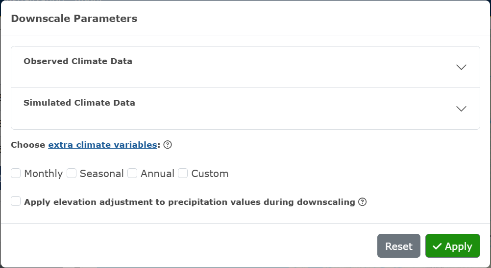
3 Instructions
For instructional videos, click here.
3.1 Get Data:
In the first tab of the climr App, users can select points or areas of interest, choose parameters, downscale the data, and preview and download the data. For a very quick summary of functionality of this page, users can also click the What does this page do link at the top of the left-hand panel.
3.1.1 Step 1. Select points or areas of interest:
Users can select points or areas of interest using one of the following two methods:
Method 1. Click on the map to select a single map point or use the draw tool box in the bottom left-hand corner of the map to manually draw an area of interest.
Method 2. Upload a csv, raster or shape file. For shape files, please upload a zipped folder containing all files.
3.1.2 Step 2. Choose downscale parameters:
Users can select parameters by clicking the Choose Downscale Parameters button. These parameters are separated into two categories, Observed Climate Data and Simulated Climate Data (Figure 3.1).
Under the Observed Climate Data accordion, users can select observed periods (the reference period 1961-1990 will always be computed). If the input is individual map points, users can choose to specify observed years and observation time-series data (Figure 3.2).
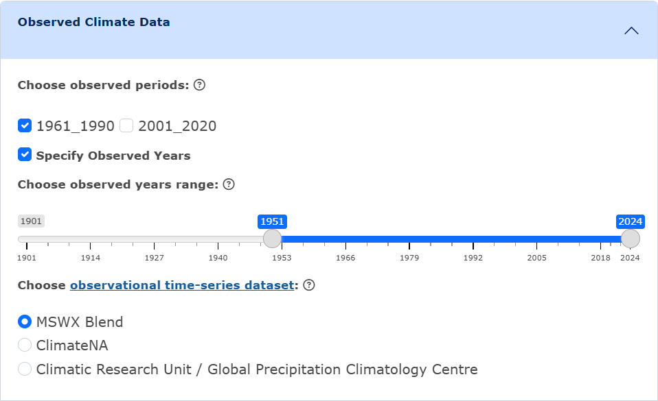
Under the Simulated Climate Data accordion, users can either choose to use the recommended default settings, or manually choose the Global Climate Models (GCMs), Shared Socio-economic Pathways (SSPs), and GCM period. If the input is individual map points, users can choose to specify the GCM years, and the maximum number of model runs (please note that if 0 is selected, the ensemble mean will be used) (Figure 3.3). For shape input, the ensemble mean will always be used in the output data.
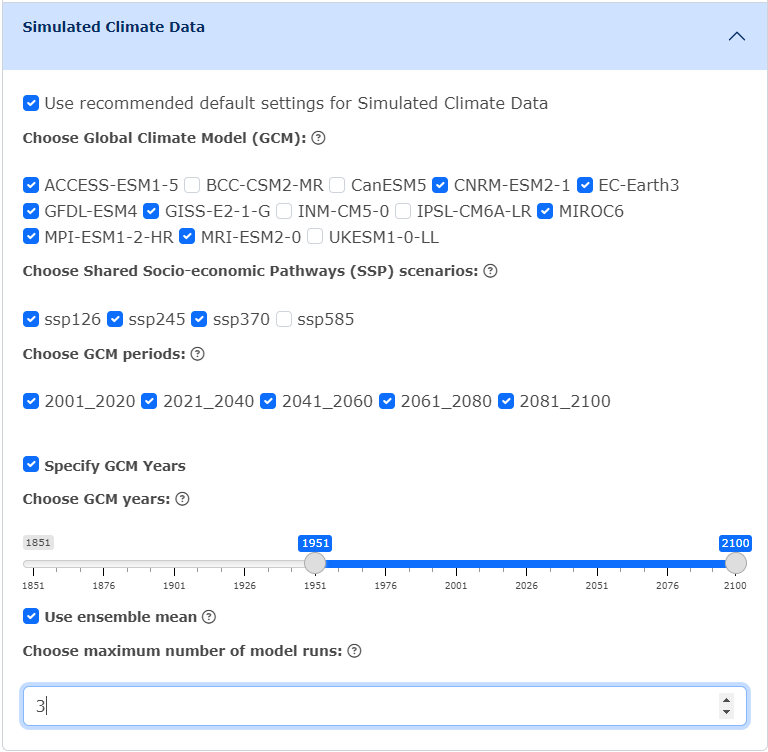
Users can then choose to select extra climate variables. These are organized into packages of Monthly, Seasonal and Annual variables, or users can choose to select custom variables by clicking Custom and specifying the element and seasons/months wanted (Figure 3.4). If no extra climate variables are selected, monthly precipitation (PPT), mean daily maximum temperature (Tmax), and mean daily minimum temperature (Tmin) will be computed.
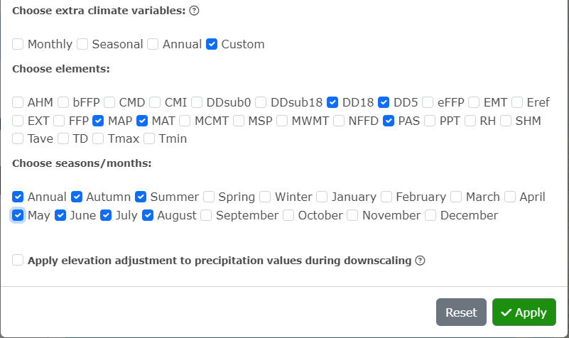
Click Apply!
To clear all selections, click Reset.
3.1.3 Step 3. Generate Results:
Click on the Generate Results button. If the area of interest are map point(s) or an uploaded file of single points, the only output format available for the downscaled data is csv. If the area of interest is a map drawn shape or a shape file, users can choose between csv and GeoTIFF as the output format.
If GeoTIFF is selected, users will need to choose downscale resolution (Figure 3.5).
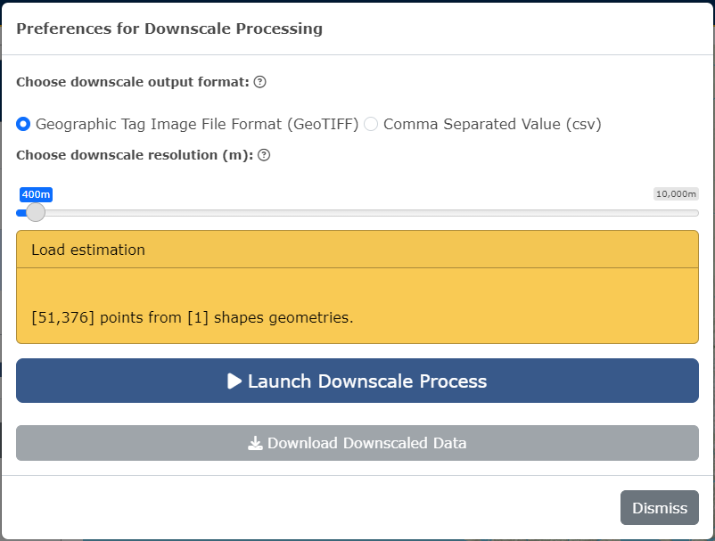
Click Launch Downscale Process. Notification boxes will appear on the right-hand side of the screen while the downscale is processing, indicating each step.
If csv has been selected, a preview will appear under the Launch Downscale Process button, and users can choose to download the data (Figure 3.6).
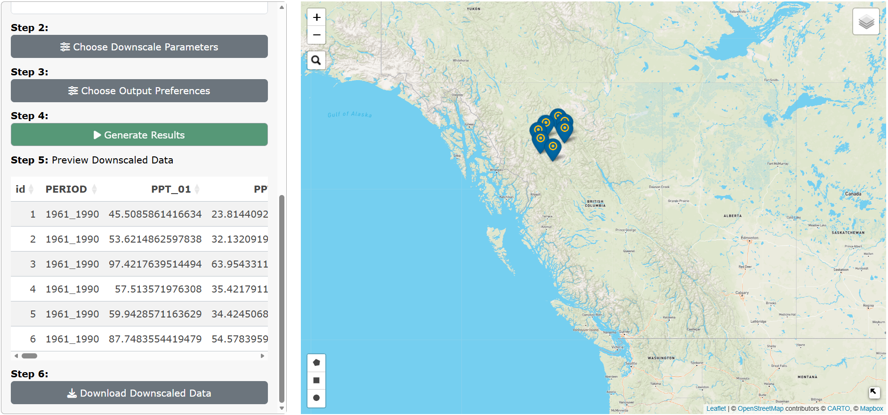
If GeoTIFF has been selected, raster preview options will appear on the main panel beside the map. Users can select raster to layers to preview in the area of interest on the map and click Preview Raster Layer to view. Users can also download the downscaled data from this panel (Figure 3.7).
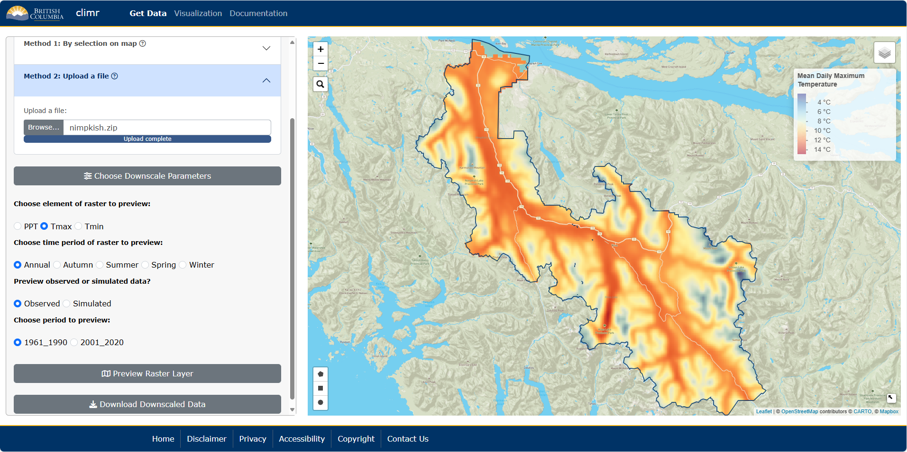
Users can view the calculated difference between the period selected and the reference period (1961-1990) (Figure 3.8).
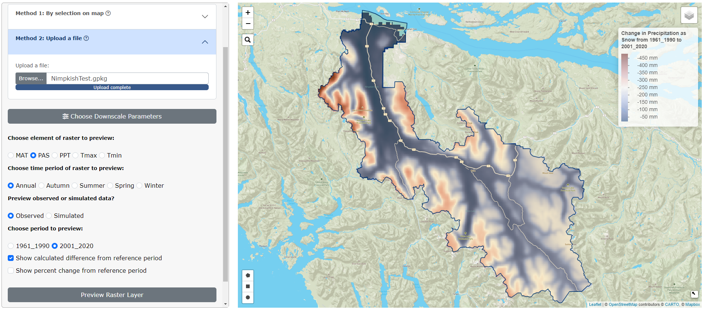
Users can also view the the percent change between the period selected and the reference period (1961-1990) (Figure 3.9).
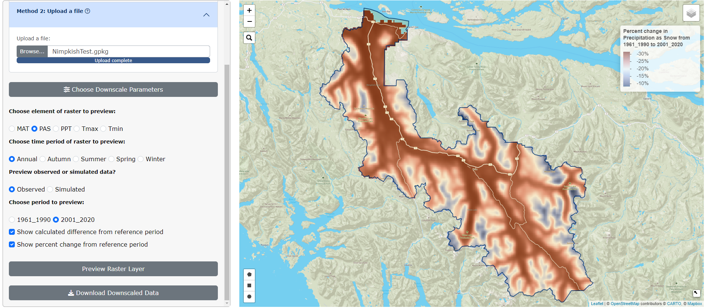
To clear all selections on the map and start again with new data, click on the red Clear Selections button in the main panel.
Please note that users will not be able to open GeoTIFF downloads in Photos. We recommend reading the output in R or opening the file in GIS software.
3.1.4 Job Size Limits for Raster Output:
Currently, there are job size limits implemented on the downscaling of map-drawn shapes and uploaded shape files (see Known Issues for more information). After a user has chosen the downscale parameters wanted and clicked Apply, a warning box may appear (Figure 3.10). This occurs when a user has selected too many parameters, which creates too many raster layers to downscale. We recommend running the downscale process one GCM at a time if this happens; or if a user has selected multiple climate variable packages, try downscaling one package at a time.
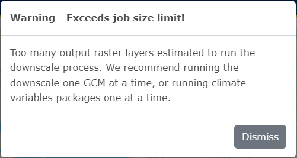
After clicking Generate Results, the available range for downscale resolution is dependent on how many raster layers will be output (Figure 3.11). If a user wants a higher resolution (the highest possible is 250m), we recommend downscaling one GCM at a time.
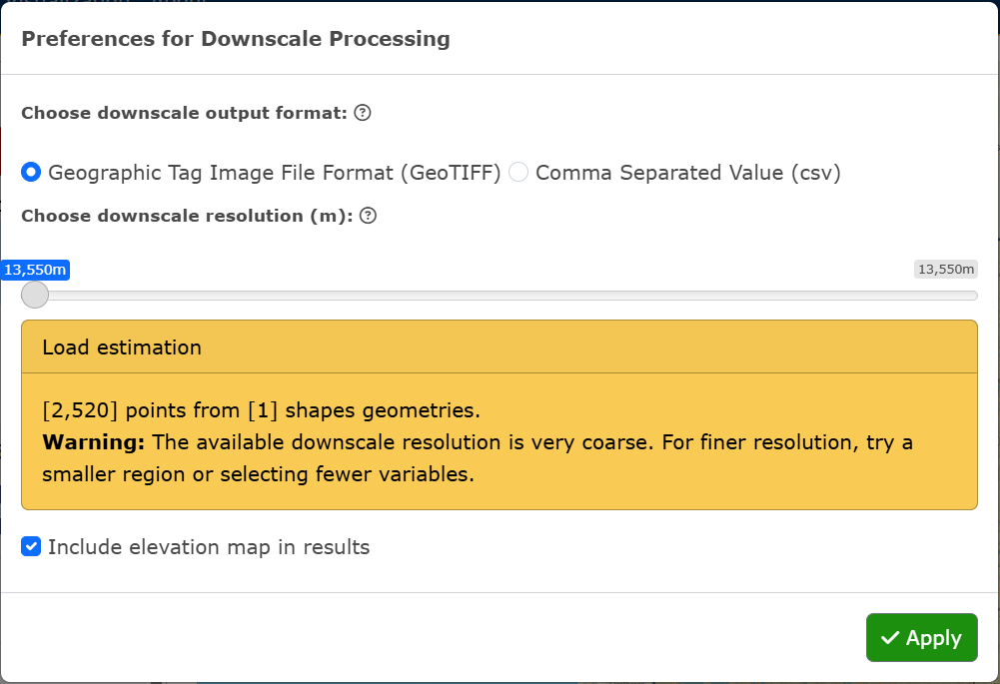
3.1.5 More information on choosing downscale parameters:
See the Glossary of Terms for the definitions of downscale parameters and climate variables.
3.2 Visualization
In the second tab of the climr App, users can select an ecoregion of North America, an area of interest by Forest Landscape Plan (FLP) Areas, or by single map points. Users can then visualize data for the selected area by available plots (Time Series, Bivariate, Walter-Lieth). Users can also add a climate map as an overlay on North America. For a very quick summary of functionality of this page, users can click the What does this page do link at the top of the floating panel. For information on each plot, users can also click on the What does this plot mean link at the top of panel of plot parameters.
Users can also visualize climate data across all of North America by climate map overlays.
3.2.1 Step 1. Select points or areas of interest:
Users can select points or areas of interest using one of the following three methods:
Method 1. Select Ecoregion and click on one of the outlined areas on the map. The Ecoregion names will appear as users hover over the areas.
Method 2. Select FLP Area and click on one of the outlined areas on the map. The FLP Area names will appear as users hover over the areas.
Method 3. Select Map point and click on the map to add a single point.
3.2.2 Step 2. Visualize by plots:
Users can navigate to each plot by clicking on the plot name within the navigation bar.
3.2.2.1 Ecoregion and FLP Area Plots
Please note that these plots are not interactive. Whenever a user makes a change to a variable, they must click the green Generate Plot button to see the changes reflected on the plot.
3.2.2.1.1 Time Series Plot:
Choose the variable to plot by clicking on the Element and Season/month drop-down inputs. Click on the green Generate Plot button (Figure 3.12).
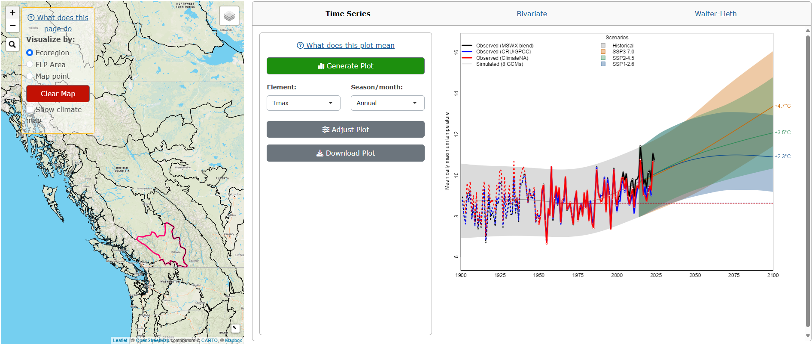
To adjust the plot parameters from the recommended defaults, click on the Adjust Plot button, select the observational dataset(s), GCM(s) and SSP(s), and click OK! (Figure 3.13).
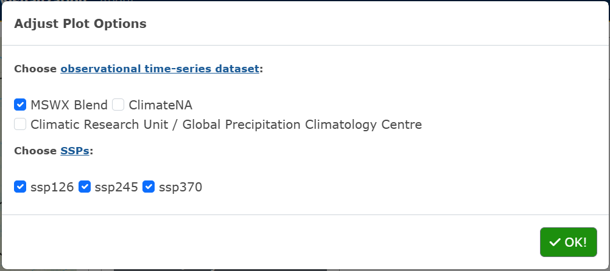
To download the plot as a PNG, click the Download Plot button.
3.2.2.1.2 Bivariate Plot:
Choose the x-axis and y-axis variables to plot by clicking on the Element and Season/month drop-down inputs, and the time period. Click on the green Generate Plot button (Figure 3.14).
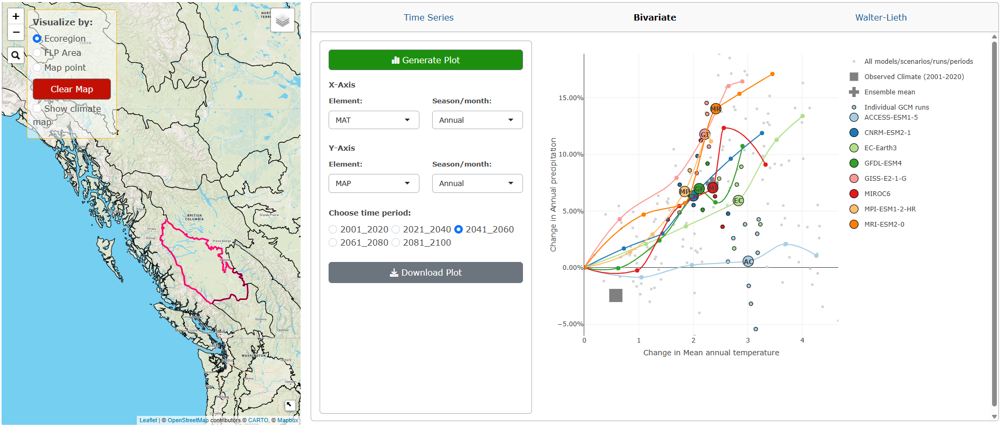
To download the plot as a PNG, click the Download Plot button.
3.2.2.1.3 Walter-Lieth Climate Diagram:
Choose the observed period and if the diurnal range is shown. Click on the green Generate Plot button (Figure 3.15).
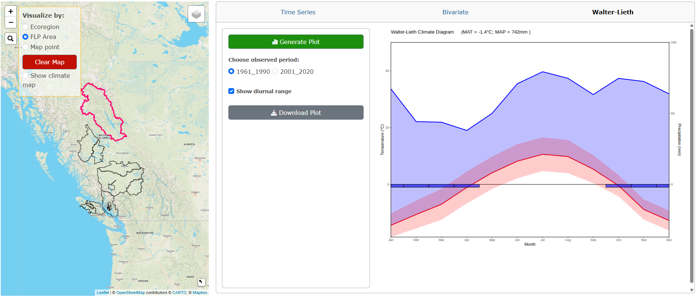
To download the plot as a PNG, click the Download Plot button.
3.2.2.2 Map Point Plots
Please note that these plots are interactive. Whenever a user makes a change to a variable, the plot will automatically update.
3.2.2.2.1 Time Series Plot:
Click on the green Downscale Data button. The app will downscale data for all variables available for the selected map point, this can take about a minute. Blue notification boxes will appear on the right-hand side of the screen as the downscaling is in progress and a plot will appear after the downscaling is complete (Figure 3.16).
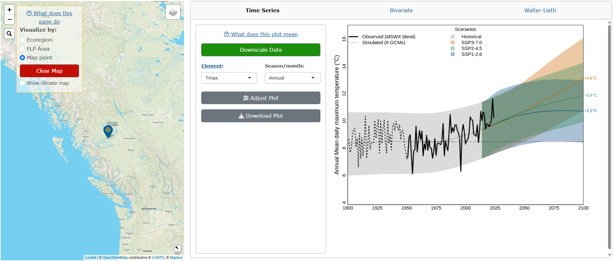
To change the variable plotted, select the Element and Season/month from the drop-down menus.
To adjust the plot parameters from the recommended defaults, click on the Adjust Plot button, select the observational dataset(s), GCM(s) and SSP(s), and click OK! (Figure 3.17).
To download the plot as a PNG, click the Download Plot button.
3.2.2.2.2 Bivariate Plot:
Click on the green Downscale Data button. The app will downscale data for all variables available for the selected map point and a plot will appear after the downscaling is complete (Figure 3.18).
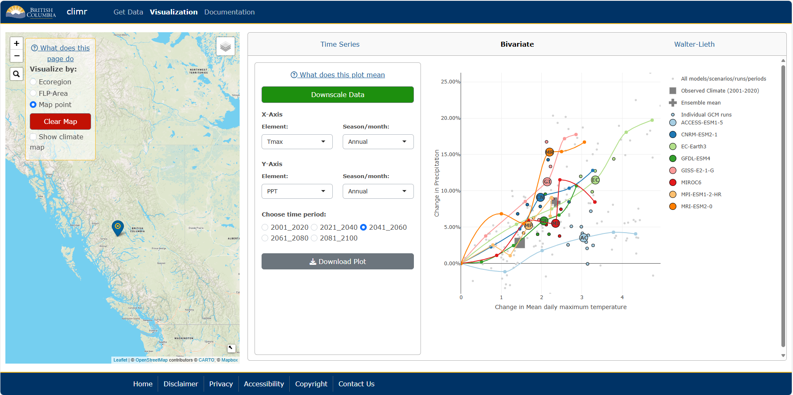
To change the x-axis and y-axis variables plotted, click on the Element and Season/month drop-down inputs, and the time period.
To download the plot as a PNG, click the Download Plot button.
3.2.2.2.3 Walter-Lieth Climate Diagram:
Click on the green Downscale Data button. The app will downscale data for all variables available for the selected map point and a plot will appear after the downscaling is complete (Figure 3.19).
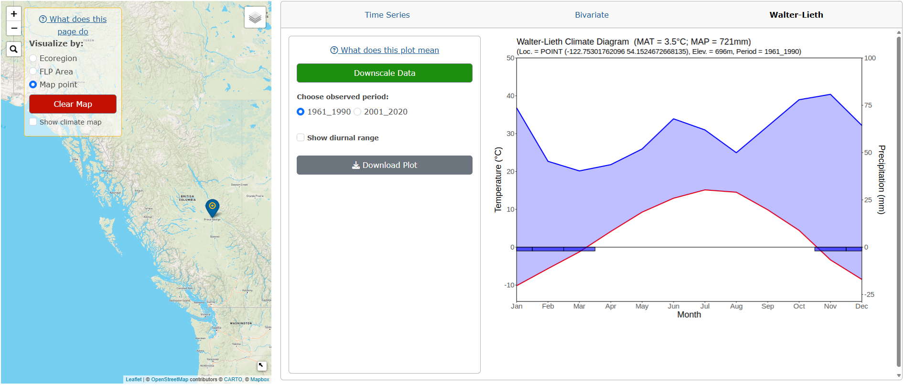
Users can change the observed period and if the diurnal range is shown.
To download the plot as a PNG, click the Download Plot button.
To clear all plots and selected points/areas, click the red Clear Map button.
3.2.3 Climate Map Overlays:
Users can overlay a climate map onto all of North America. These maps can be displayed underneath the Ecoregion/FLP Area/map point boundaries or by itself.
Click on the Show climate map checkbox in the main panel and variable options for the map will appear underneath.
Choose the Resolution for the overlay. 2500m is available for all of North America while the 800m is only available for the west coast, from the top of the Mackenzie Mountains in the Yukon & Northwest Territories, down to the southern border of Oregon, and from the west coast to the east border of Alberta. We recommend the 800m resolution to users who are viewing smallers areas along the west coast.
Choose the variable to display by selecting the Element and Season from the respective drop-down menus (Figure 3.20).
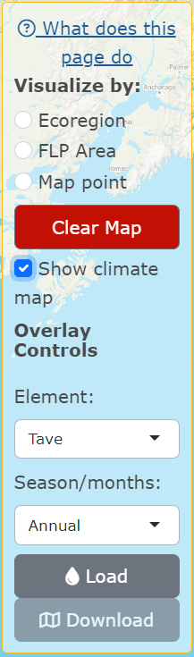
Click Load. The map will take about 5-10 seconds to render (see Figure 3.21 for 2500m resolution and Figure 3.22 for 800m resolution).
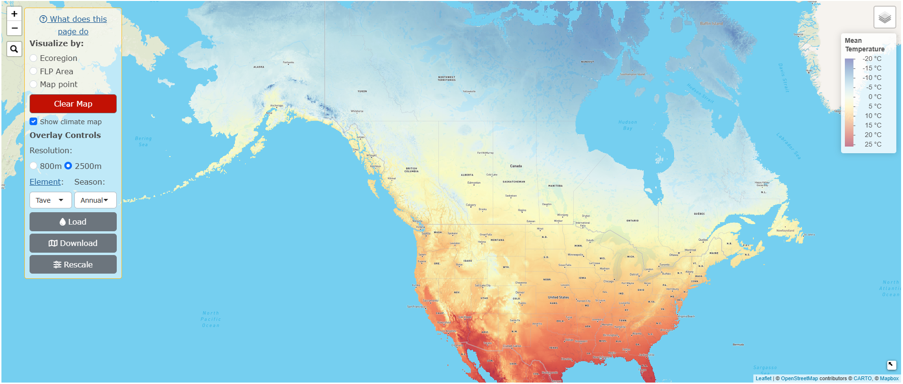
For ratio variables, an Apply scale adjustment checkbox will appear, which applies a log scale adjustment to the data (Figure 3.22).
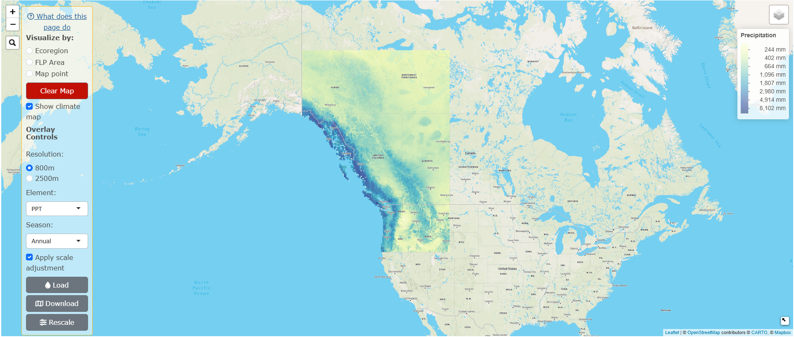
Users can also zoom in on an area they would like to see in more detail, and click on Rescale. This will distribute the colour palette across the area of the map that is visible in the screen, allowing the user to see the differences in the variable selected more clearly. The difference between the original overlay and the rescaled version is shown in Figure 3.23 (without rescaling) and Figure 3.24 (with rescaling). Please note that users must Load the overlay of interest first, before clicking Rescale!
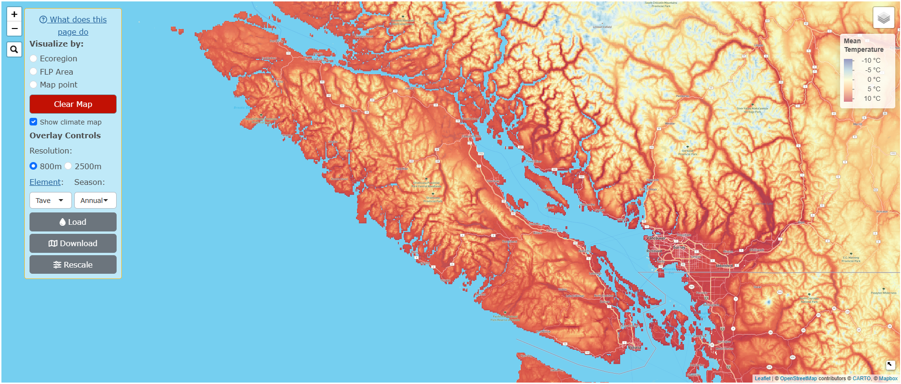
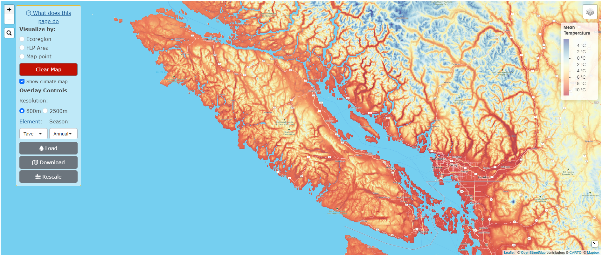
To download the climate map, click Download.
To remove the overlay, click on the red Clear Map button.